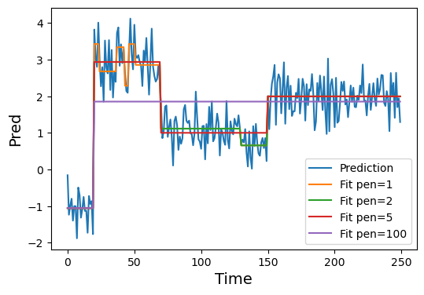

max_t = 10000
Ds = np.array([0.5, 1., 5., 20])[:, None, None] # Extra dimensions to broadcast
dim = 2
np.random.seed(7)
trajs = tensor(brownian_motion(len(Ds), max_t, Ds, dim=dim))Baselines
Alternative segmentation methods to provide benchmarks.
Diffusion properties
The diffusion properties of a particle are capture in its mean squared displacement (MSD) \(\langle x^2\rangle = 2d Dt^\alpha\), where \(d\) is the dimension, \(D\) is the diffusion coefficient and \(\alpha\) is the anomalous diffusion exponent. A common technique to study single-particle diffusion is to estimate the MSD with the time-averaged mean squared displacement (TA-MSD).
tamsd
tamsd (x:torch.Tensor, dt:int=1)
Time-averaged mean squared displacement of a trajectory x in dt intervals.
| Type | Default | Details | |
|---|---|---|---|
| x | Tensor | Input trajectory of shape [length, dim] | |
| dt | int | 1 | t-lag: time interval to compute displacements |
| Returns | float |
From the TA-MSD, we can compute both \(D\) and \(\alpha\) looking at its scaling with \(t\). In Brownian motion, we can extract the diffusion coefficient through a linear fit of the TA-MSD \(\propto 2dDt\) over time, as the slope is \(2dD\). In anomalous diffusion, we can perform a linear fit in logarithmic space, since it follows a power-law TA-MSD \(\propto t^\alpha\).
anomalous_exponent_tamsd
anomalous_exponent_tamsd (x:torch.Tensor, t_lag:Iterable=[])
Estimates the anomalous exponent fitting the tmsd in log-log scale for different t-lags.
| Type | Default | Details | |
|---|---|---|---|
| x | Tensor | Input trajectory of shape [length, dim] | |
| t_lag | Iterable | [] | t-lags to consider. Defautls to [2,…,max(5, 10% length)] |
| Returns | float | Anomalous exponent |
diffusion_coefficient_tamsd
diffusion_coefficient_tamsd (x:torch.Tensor, t_lag:Iterable=[1, 2])
Estimates the diffusion coefficient fitting the tmsd for different dt.
| Type | Default | Details | |
|---|---|---|---|
| x | Tensor | Input trajectory of shape [length, dim] | |
| t_lag | Iterable | [1, 2] | t-lags to consider for the fit. [1, 2] is optimal for Brownian motion |
| Returns | float | Diffusion coefficient |
Let’s see an example with Brownian motion. First, with our brownian_motion function, we can simulate a few trajectories with different diffusion coefficients.
Let’s compute the diffusion coefficients for the trajectories.
[diffusion_coefficient_tamsd(traj.T) for traj in trajs][0.5010303556919097, 0.9403451681137086, 4.982022762298584, 19.222974777221676]We can do a similar analysis for anomalous diffusion. Let’s use the andi_datasets library to generate a few fractional brownian motion trajectories with different \(\alpha\).
ad = datasets_theory()
alphas = [0.1, 0.5, 1., 1.5]
np.random.seed(7)
trajs = ad.create_dataset(T=max_t, N_models=1, exponents=alphas,
models=[2], dimension=dim)
trajs = tensor(trajs[:, 2:]).reshape(len(alphas), max_t, dim)[anomalous_exponent_tamsd(traj) for traj in trajs][0.1301758215732175,
0.47395024375992173,
0.9880268080088149,
1.4136567214095137]Changepoint detection methods
Local convex hull method
The local convex hull method allows us to detect changepoints between two diffusive states in a trajectory. However, it does not provide any information about the properties of the segments.
hull_diameter
hull_diameter (hull)
Diameter of the local convex hull.
convex_hull_cp
convex_hull_cp (traj:numpy.ndarray, tau:int=10, method:str='volume')
Detect the changepoints in traj with the local convex hull method.
| Type | Default | Details | |
|---|---|---|---|
| traj | ndarray | Trajectory to study | |
| tau | int | 10 | Size of the sliding window |
| method | str | volume | Property of interest: “volume” or “diameter” |
| Returns | ndarray | Changepoints along the trajectory |
This method relies on computing properties of the local convex hull conformed by a set of \(\tau\) points along a trajectory. Whenever we encounter large changes in these properties, it signals a change in the diffusion mode. We typically consider the volume or the diameter of the hull.
To identify the changes, the method relies on a simple heuristic: we compute the mean of the property of interest along the trajectory and we mark a changepoint whenever we cross the mean value.
Let’s see an example with a trajectory. We consider a 2D Brownian motion trajectory with two diffusive modes: a slow and a fast one. To simulate the fast one, we multiply the trajectory displacements by a factor \(\gt1\), effectively increasing the diffusion coefficient by its square.
T = 1000
cps = np.array([400, 600])
np.random.seed(7)
traj = np.random.randn(T, 2)
traj[slice(*cps)] = 2.5*traj[slice(*cps)] # 2.5x factor displacements between cps
traj = traj.cumsum(0)The resulting trajectory has two changepoints in which we switch from slow to fast and fast to slow, respectively.
To build some intuition about convex hulls, let’s look at the local convex hull of the first 10 points of the trajectory.
points = traj[:10]
hull = ConvexHull(points)Code
plt.plot(hull.points[:, 0], hull.points[:, 1], 'o-')
for simplex in hull.simplices:
plt.plot(hull.points[simplex, 0], hull.points[simplex, 1], 'k-')To distinguish between both diffusive states, we compute the local convex hull properties (diameter and volume) over a sliding window of size \(\tau\) along the trajectories.
tau = 10
max_t = traj.shape[0] - 2*tau
Sd = np.zeros(max_t)
Sv = np.zeros(max_t)
for k in range(max_t):
hull = ConvexHull(traj[k:(k+2*tau)])
Sd[k] = hull_diameter(hull)
Sv[k] = hull.volumeThis allows us to extract the changepoints by looking at the points where the diameter or volume over time cross their mean value over time. This is what we do to find the changepoints in convex_hull_cp.
changepoints_vol = convex_hull_cp(traj, tau=tau, method="volume")
changepoints_diam = convex_hull_cp(traj, tau=tau, method="diameter")In the figures below, we see all the information together. The changepoints (red dots) are always marked in the time-step prior to crossing the mean-value line.
Code
fig, axes = plt.subplots(1, 2, figsize=(9, 3.5), constrained_layout=True)
axes[0].plot(Sd)
axes[0].scatter(changepoints_diam, Sd[changepoints_diam], c='r', label="Changepoints")
axes[0].axhline(Sd.mean(), label='Mean', c='C1')
axes[0].legend()
axes[0].fill_betweenx(np.arange(Sd.max()), on, off, zorder=-1, alpha=0.1, color='k', lw=0)
axes[0].set_xlabel('Time', fontsize=14); axes[0].set_ylabel(r'$S_d$', fontsize=14)
axes[0].set_title("Local convex hull diameter", fontsize=16)
axes[1].plot(Sv)
axes[1].scatter(changepoints_vol, Sv[changepoints_vol], c='r', label="Changepoints")
axes[1].axhline(Sv.mean(), label='Mean', c='C1')
axes[1].legend()
axes[1].fill_betweenx(np.arange(Sv.max()), on, off, zorder=-1, alpha=0.1, color='k', lw=0)
axes[1].set_xlabel('Time', fontsize=14); axes[1].set_ylabel(r'$S_v$', fontsize=14)
axes[1].set_title("Local convex hull volume", fontsize=16);Ruptures
The ruptures library implements a kernel change point detection algorithm (see their review paper) performing a piecewise constant fit of the input signal.
The algorithm can either take a fixed number of changepoints to allocate, or infer the number by balancing the accuracy of the fit with a penalty for adding new changepoints. In most of our applications, we do not know the number of changepoints beforehand (which is the beauty of STEP!).
ruptures_cp
ruptures_cp (x:numpy.ndarray, pen:float=1.0, kernel='linear', min_size=2, jump=1, params=None)
Returns the change points of signal x, excluding the initial and final times.
| Type | Default | Details | |
|---|---|---|---|
| x | ndarray | Input signal with shape [length, dim] | |
| pen | float | 1.0 | Penalty for the changepoint prediction |
| kernel | str | linear | |
| min_size | int | 2 | |
| jump | int | 1 | |
| params | NoneType | None | |
| Returns | ndarray | Changepoints along the trajectory |
This algorithm is particularly well-suited to post-process our model predictions, which are (quasi) pointwise constant. Furthermore, unlike the local convex hull method, it is not limited to just two “states”.
Let’s see an example of what could be a typical application of ruptures_cp. First, we will create a synthetic model prediction with some noise.
max_t = 250
cps = [20, 70, 150]
values = [-1., 3., 1., 2.]
np.random.seed(7)
pred = np.concatenate([[v]*(c1 - c0) for v, c0, c1 in zip(values, [0]+cps, cps+[max_t])])
pred += 0.5*np.random.randn(*pred.shape)Now let’s perform the changepoint detection over this noisy prediction considering different penalties.
penalties = [1, 2, 5, 100]
cps_pens = [ruptures_cp(pred, pen=pen) for pen in penalties]Code
plt.figure(figsize=(6, 4))
plt.plot(pred, label="Prediction")
for pen, cp in zip(penalties, cps_pens):
segment_fit = [[pred[c0:c1].mean()]*(c1-c0) for c0, c1 in zip([0]+cp, cp+[max_t])]
plt.plot(np.concatenate(segment_fit), label=f"Fit pen={pen}")
plt.legend()
plt.xlabel("Time", fontsize=14)
plt.ylabel("Pred", fontsize=14);
For this case, a penalty of \(5\) is just right to recover the ground truth value of our signal. However, if we didn’t know the ground truth beforehand, a penalty of \(2\) would also provide a reasonable result.